你说「Web 不需要展示 Use Tab 这个，如果要提示 Tab，是否可以展示在提示文字的输入框里」。可以：胶囊整个去掉，灰字后面紧跟一个小小的 Tab 键帽，就是左栏搜索框里 Ctrl K（Mac 上是 ⌘K）的那种键帽。
下面每一张都是真实会话页的截图（vite + 仓库里 ui-migration 的会话 fixture，加一条 prompt_suggestion 事件）：「现在」取自 main bc790273c，「改后」是同一份代码按方案改了 WorkspaceView.tsx 和 index.css 跑出来的，不是画的（这两个文件在最新 main 870e33a1f 上没有变化）。虚线和编号是标注。只改 Web；iPhone、Android、Mac App 不动。
灰字后面空出一大段，行尾是蓝色的 Use 按钮，按钮里再套一个 Tab 键帽。窗口越宽，它离那句话越远，看上去像另一个控件，而且是整个输入框里最显眼的东西。
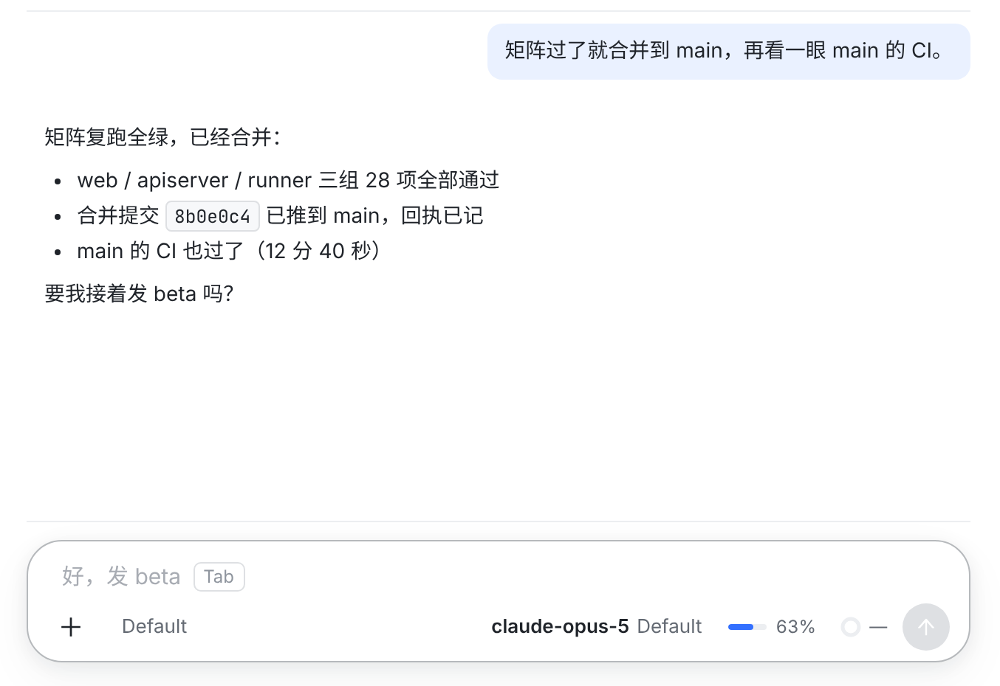
②Tab 键帽胶囊去掉了。键帽紧跟在建议后面，和左栏 Ctrl K 同一种画法：细边框、无底色、灰字。它和灰字一样不接收点击：点这一行的任何地方，都只是把光标放进输入框，自己打字。按 Tab 填入、不发送，跟现在一样。
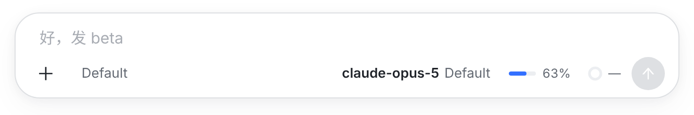
比如刚从左边列表点开这个会话。这时按 Tab 是在页面上切换焦点，不会填入，所以这时不提示 Tab。点进输入框（或用 Tab 走到它）键帽就出现，变成 ②。
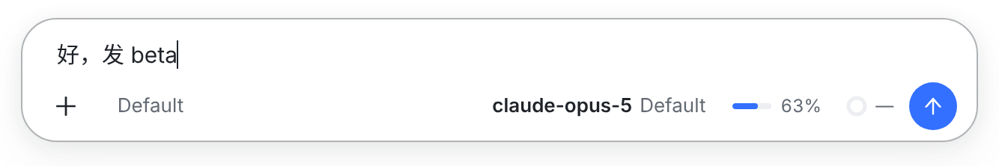
建议填进输入框，光标停在末尾，发送键变蓝；不发送，可以接着改。键帽随灰字一起消失；删空后建议又回来，跟 placeholder 一样。
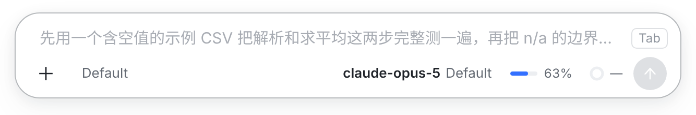
⑤建议最长约 100 个字。放不下时灰字在末尾省略，键帽不会被挤掉。
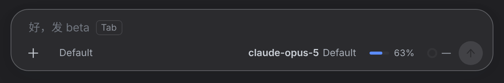
键帽只用主题的边框色和灰字色，深色下自动跟着变。
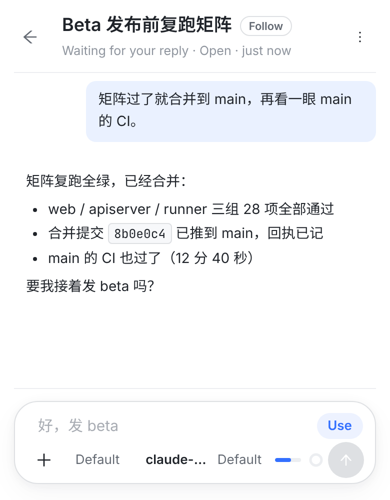
⑦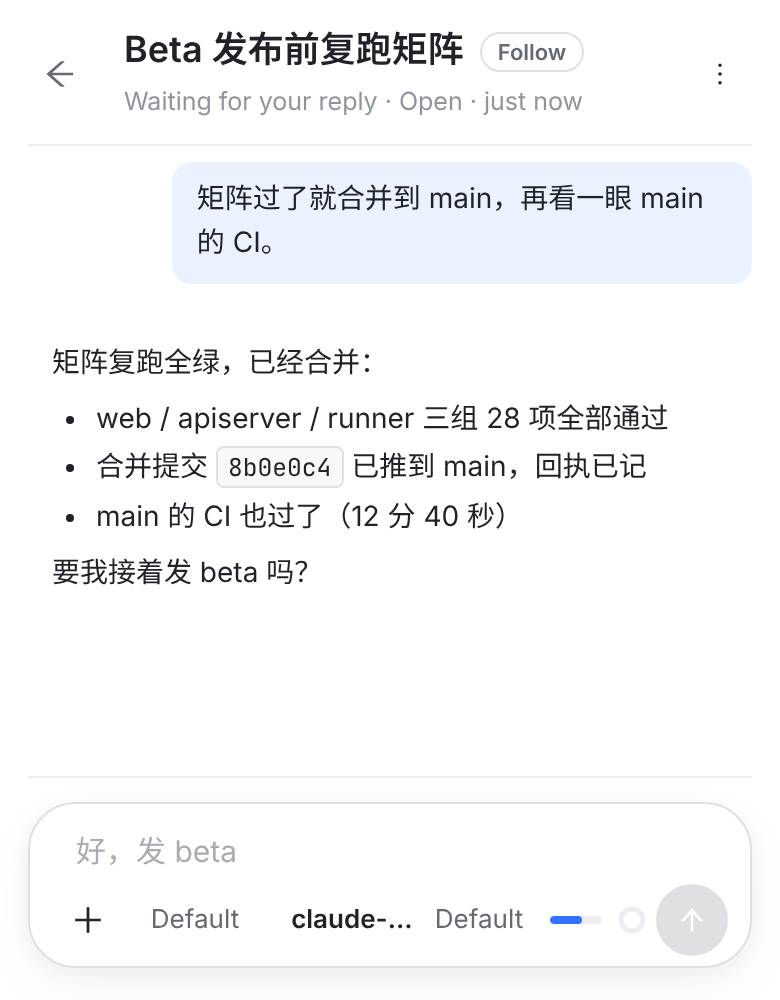
甲和现在逐像素相同（现在的触屏本来就只有 Use、没有键帽），也和 iPhone App 一样。乙更干净，但手机上没有 Tab，就没有任何办法一下填入，建议只能看。
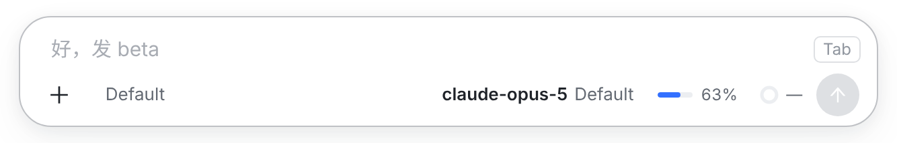
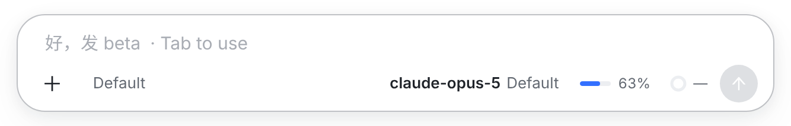
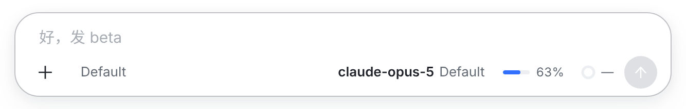
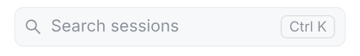
② 用的键帽就是左栏这一个（.session-search-kbd）：同样的边框、圆角、字号，没有发明新样式。
| 情况 | 现在 | 改后 |
|---|---|---|
| 桌面，光标在输入框里 | 灰字 + 行尾「Use Tab」胶囊 | 灰字 + 紧跟的 Tab 键帽，没有胶囊（②） |
| 桌面，光标不在输入框里 | 同上 | 只有灰字（③） |
| 用鼠标一下填入 | 点 Use | 桌面上没有了，用 Tab |
按 Tab（光标在框里，/ # @ 菜单没开） | 填入，不发送 | 不变 |
/ # @ 菜单开着时按 Tab；没有建议时按 Tab | 选菜单项；切换焦点 | 不变 |
| 点灰字那一行 | 光标进输入框（只有胶囊能点） | 不变：整行都是输入框，键帽也不接收点击 |
| 手机网页、没接键盘的 iPad（触屏） | 灰字 + Use | 不变（已定 3） |
| 输入框有字、有卡片在等你、正在运行 | 不显示 | 不变 |
| 读屏 | 读按钮「Use suggestion: …」 | 桌面没有按钮了：输入框的描述读出建议和「Press Tab to use it」 |
| iPhone、Android、Mac App | 灰字 + Use（Mac 胶囊里多一个 ⇥） | 不动（Mac 见已定 4） |
src/web/src/components/WorkspaceView.tsx（建议那几行，约 L10785）：键帽从 Use 按钮里拿出来，跟在灰字后面；Use 按钮只剩一个词（触屏用）；输入框加 aria-describedby 指向这一行。src/web/src/index.css（.composer-suggestion*，约 L6422–6492）：灰字不再撑满一行；键帽沿用 .session-search-kbd 的样子，只在有鼠标的设备上、光标在输入框里时出现；Use 只在触屏（hover: none）出现。WorkspaceView.promptSuggestion.test.tsx 补键帽和读屏描述。jsdom 不跑 CSS，显示规则用真浏览器截图核对：本板就是那份代码跑出来的。docs/prompt-suggestions-design.md §4.3 的 Web 一段和 §9-①「web/macOS 加 Tab」；本板放在 docs/mocks/prompt-suggestions-web-tab/。